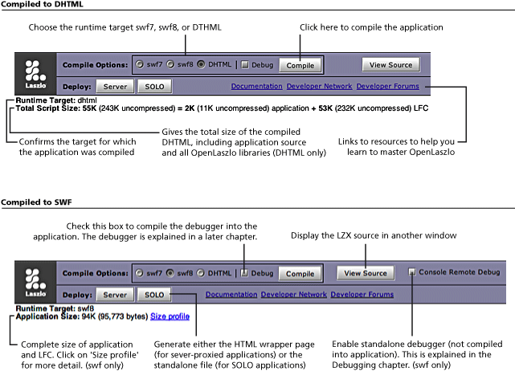

This chapter summarizes information about OpenLaszlo application structure and mechanics that an experienced programmer will need in order to start playing with code.
This discussion is necessarily abbreviated and incomplete; its purpose is merely to point you in the right direction. As you begin to write LZX applications, you should also work through the tutorials.
The program development cycle differs somewhat depending on whether you deploy your application proxied or SOLO. Developing proxied applications is the simpler case, so we'll start with that here.
The process of developing an OpenLaszlo application can be summarized:
start up the OpenLaszlo Server
using a text editor, write program code; save the file with a .lzx extension
place file in an appropriate directory
compile the application
debug and modify the program
repeat steps 2-5 until the program is perfect
deploy the application
Each of these steps is described in turn below, and explored in greater depth throughout this Guide. But first we'll say a word about the Developer's Console, which is the default interface for performing common development activities.
The Developer's Console is a small OpenLaszlo application for selecting things like the target runtime, the deployment mode (proxied or SOLO) and whether the debugger is included. When you first compile an OpenLaszlo application (as explained below), by default it is returned with the Developer's Console appearing at the bottom of the application.
Depending on whether your compile to SWF (the default) or DHTML, a slightly different version of the Developer's Console is returned. The illustrations below call out features of both versions.

To return the "naked" OpenLaszlo application without the Developer's Console, simply compile the application using the "URL" method of placing the URL to the application in your browser's address bar with ?lzt=html appended to the address. This will return the application in an HTML page. See Chapter 49, Understanding Compilation and Chapter 35, Browser Integration for elaboration of this topic.
The way to start the OpenLaszlo Server (OLS) depends on the operating system and how it was installed. On Windows, typically you start OLS from the Start menu; on Mac OS X the default installation places the OpenLaszlo launch icon on your desktop. If you don't have the OpenLaszlo Server installed on your machine, you can download it from http://www.openlaszlo.org/download.
Because LZX files are XML documents, you can use any text or XML editor to create and edit source. Filenames must end with the .lzx extension. As you write, you'll want to have the LZX Reference Manual handy. See below for a discussion of how to use this document efficiently.
In order to be compiled by the OpenLaszlo Server, files must be placed in subdirectories of the following path:
[Windows]
c:\Program Files\Laszlo Presentation Server 5.0\jakarta-tomcat-5.0.24\webapps\lps-5.0\
[MacOS]
Macintosh HD:/Applications/Laszlo Presentation Server 5.0/jakarta-tomcat-5.0.24/webapps/lps-5.0:
Typically you will create a directory with a name such as
my-apps in which to place programs under development. You
can nest subdirectories, such as
my-apps/practice/samples
so long as they are under the correct path to the OpenLaszlo Server (lps).
See Chapter 49, Understanding Compilation for a complete discussion of all compilation options.
There are two distinct techniques for compiling the application:
You can load it into a web browser, which will cause the OpenLaszlo Server to compile it automatically when the program is first used and any time it changes; or
You can invoke the stand-alone compiler separately.
The simplest and most common way to compile applications, especially when you are first getting familiar with OpenLaszlo, is to let the OpenLaszlo Server handle it. Both techniques are described in turn below.
In order to run your program, simply load it into your browser. The exact URL depends on the configuration of the server, but will typically look something like:
http://127.0.0.1:8080/lps-5.0/path to your directoryThe OpenLaszlo Server checks the source files for valid syntax, compiles them, caches the executables and makes the application immediately visible in the browser.
The standalone compiler is called lzc. Its location depends on how you have installed OpenLaszlo. Developers who build OpenLaszlo from the source will find lzc in $LPS_HOME/WEB-INF/lps/server/bin/. Developers who install OpenLaszlo with a binary installer will find it in the directory OpenLaszlo Server 5.0/bin.
Developers with more than one version of the OpenLaszlo server in play should define an alias: alias lzc='$LPS_HOME/WEB-INF/lps/server/bin/lzc'. By defining an alias based on $LPS_HOME, one can have multiple shells -- each with a different $LPS_HOME -- and the alias will map to the correct compiler for each shell
If you open a local SWF file in Internet Explorer, or an HTML page that accesses a local SWF file in Internet Explorer, you will get a "blocked content" warning message. You can safely disregard this message and continue developing. Here is why: this is not a problem with OpenLaszlo nor is it a problem with IE per se. Rather it is a security feature built into IE to keep viruses from accessing ActiveX controls, and it only appears when you're developing applications, not when you're deploying them.
Internet Explorer uses an ActiveX control to display Flash files. It assumes that a local file trying to access an ActiveX control may very well be a virus, so it puts up the warning.
When you actually deploy your OpenLaszlo application, however, it will be served to your visitors through a Web Server (IIS, Apache, etc) off of an actual domain, and therefore will not show the error message. To verify this, run a web server locally on your system and serve the page off of your local web server. you will see that the error message will not be displayed.
Please see also the discussion of SWFObject in Chapter 35, Browser Integration for a more complete discussion of embedding Flash files in HTML pages.
If the Sever detects errors that prevent compilation, error messages are displayed in the browser.
If it detects non-critical errors or questionable constructs that do not prevent compilation, warning messages are displayed in the browser below the application (you may have to scroll down to see them):
Runtime errors are displayed in the debugger, if the debugger is running.
See Section 2.7, “Debugging” for a brief discussion of the debugger. See Chapter 51, Debugging for a full discussion.
After you've made changes to the source, simply click the Refresh button on the browser. The OpenLaszlo Server automatically rechecks the source for syntax, then recompiles, re-caches and makes the application visible in the browser.
Optimize your program using the techniques in Chapter 43, Performance Monitoring and Tuning.
See Chapter 25, Proxied and SOLO Applications for discussion of how to make your application available for general use.
The canonical "Hello, World" program can be written in LZX:
This program illustrates three essential features of all Laszlo applications:
The next section discusses the ingredients of a typical OpenLaszlo application. See also the example programs to get a feel for the general structure of LZX applications.
Typical Laszlo applications contain the following parts, which are discussed briefly in turn below
canvas (Section 2.2, “The Canvas”)
views (Section 2.3, “Views”)
data (Section 2.4, “Data Binding”)
libraries and includes (Section 2.5, “Includes and libraries”)
comments (Section 2.6, “Comments”)
The root node of every Laszlo application is the canvas; there is one and only one canvas per LZX application. The canvas is the logical container of all other nodes in the program; visually it is a rectangle that is displayed in the content area of a web browser. You can explicitly set the height and width of the canvas, in pixels, by assigning values to attributes in the opening tag.
<canvas height="20" width="30"> </canvas>
If you do not set the height and width, the canvas — like other views — sizes itself to the size of the views it contains. Unlike other views, the canvas, by default, has a nonzero width and height: it sizes itself to the HTML page that contains it. Therefore the null LZX application
<canvas/>
defines an invisible object that is the size of the page.
In addition to its height and width, the canvas has several other
visible attributes. The background color, defined by the
bgcolor attribute, is most useful for learning
about the visual structures of LZX applications.
Within LZX applications, you can embed arbitrary JavaScript
functions by nesting them in <script>
constructs. This is helpful for defining (global) functions that will
be used by different classes. The <script> tag must
be a child of <canvas>. That is to say,
<canvas>
<script>
var Constant = 1;
</script>
</canvas>
is an allowed structure while
<canvas>
<view>
<script> (1)
var Constant = 1;
</script>
</view>
</canvas>
In LZX the id attribute of an object is a
global identifier that is visible throughout the entire program space,
while the name of an object is an attribute
like any other, which can only be referenced by its path (except in
the case of named children of the canvas, as noted
below). Consider
<canvas>
<view id="v1" name="outer_view">
<view id="v2" name="inner_view" bgcolor="blue"/>
</view>
</canvas>The value of the outer view's background color can be referenced as
v1.bgcolor or outer_view.bgcolor. The
background color of the inner view can be referenced as
v2.bgcolor from anywhere within the application. To
reference it by name from outside of inner_view you would
specify outer_view.inner_view.bgcolor.
Objects that are named children of the canvas can be simply addressed. For example, consider
<canvas> <view name="artichoke"> <!-- more program code --> </canvas>
The view artichoke can be referenced from
anywhere within the application simply as artichoke. That
is, it is not necessary to reference it as
canvas.artichoke.
The view is the basic visible element in an OpenLaszlo application. Anything that is displayed on the canvas is a view (or an object that is an instance of a class that extends view).
A view is only visible if it has color, or text, or an image assigned to it, and if the height and width of the view are greater than zero. For example, the following code would display only one view even though three views are defined. The second and third views exist but they are invisible. The second has no color assigned to it and the third has zero width. They still, however, affect the arrangement of the other two views.
Views can also contain other views, allowing you to create complex visual elements. Each 'parent' view can have any number of children. By default, each child view is positioned relative to the top-left corner of its parent as shown in the example.
Although it is always possible to position any view by specifying
its horizontal (x) and vertical
(y) origin, stated in pixels, relative to its
parent, it is often convenient to have the system lay things out for
you. Layout types built into the system include
<simplelayout>[unknown tag]
, <stableborderlayout>[unknown tag]
,
<constantlayout>[unknown tag]
, <resizelayout>[unknown tag]
and
<wrappinglayout>[unknown tag]
.
Consider the following application:
Example 4.3. Parent and children dimensions
<canvas height="200" width="100%">
<view bgcolor="red" x="50" y="50" width="100" height="100">
<view bgcolor="yellow" x="50" y="50" width="60" height="105"/>
</view>
</canvas>
Running the example above also shows that the width and height of a view can be different than the dimensions of the bounding box of its child views. No clipping occurred on the "yellow" view even though it lies outside the boundary of its parent.
If no width and height are actually defined for a view, then it will adopt the width and height of the bounding box not its subviews. If clipping is desired, however, then the attribute clip="true"
can be added to the parent, which would look like the following.
Example 4.4. Clipping
<canvas height="200" width="100%">
<view bgcolor="red" x="50" y="50" width="100" height="100" clip="true">
<view bgcolor="yellow" x="50" y="50" width="60" height="105"/>
</view>
</canvas>
In addition to showing text and color, views are used to display, or play, media files of various formats, such as .gif, .jpeg, .png, .swf, and .mp3, for example. These resources may be compiled into the application or brought in at run time; they can be on the OpenLaszlo server or on a remote back end, and can be referenced by relative paths or absolute ids.
LZX derives much of its power from its unique implementation of data binding, in which the contents of a view are determined by the contents of a dataset. A dataset is simply a named hierarchy of XML data that has a single root node. All data in LZX applications is contained in datasets.
The concept of data binding implies more than the use of views to display XML data; rather the data itself can determine the size, color, contents, placement, etc. of views, and even cause views to be created or destroyed.
Consider the following program:
Example 4.5. Simple databinding
<canvas height="100" width="100%">
<dataset name="ds">
<record x="10" y="20" name="first" color="332136432"/>
<record x="5" y="5" name="second" color="56521236432"/>
<record x="20" y="2" name="third" color="1565336432"/>
</dataset>
<simplelayout axis="y"/>
<view datapath="ds:/record">
<text datapath="@name" bgcolor="$path{'@color'}" x="$path{'@x'}"/>
</view>
</canvas>
In the above example, the one line
<view datapath="ds:/record">
Causes three views to be created, and the line
<text datapath="@name" bgcolor="$path{@color}" x="$path{@x}"/>
causes each view's textual content, background color and
x position to be determined by the contents of
the dataset.
The source code for an LZX application can be contained in a single file; such files can grow quite large and thus hard to manipulate and maintain. By dividing your application into a number of smaller files, however, you can increase maintainability and understandability of your application. You can even break deep view hierarchies into multiple files to improve modularity, clarity, and source code organization.
This tag allows you to specify the name of a file to be include at any point in your application. The file to be included can be a library, a view, or text.
When the target is a library file (an XML file whose root element
is <library>[unknown tag]
), the contents of the library file are
included in the application. Any views, scripts, fonts, resources,
audios, datasources, datasets, class definitions, etc. in the library
file are included in the application. A library file can include other
libraries, but a library is included in an application only once, no
matter how many <include> statements reference
it. For example,
<canvas> <include href="library.lzx"/> <mywindow/> </canvas>
<library>
<class name="mywindow" extends"window"
title="My Title">
<button> Click me! </button>
</class>
</library>
The semantics for including views and text are analogous but slightly different. Unlike including a library file, a non text or view file is inserted once each time it's included.
These take the form
<!-- comment -->
and may appear between (but not within) tags in XML text. XML does not have a separate syntax for line ending comments, and does not allow nested comments.
Often when debugging you find yourself commenting out sections of code. Because it's illegal to nest XML comments within XML comments, this technique does not work for commented sections of declarative LZX. A good way around this problem is to use XML processing instructions which are of the form
<?ignore ?>
So, to comment out the blue and green views below,
<canvas height="100">
<simplelayout/>
<!-- This is a red view -->
<view bgcolor="red" width="100" height="20"/>
<?ignore (1)
<!-- This is a blue view -->
<view bgcolor="blue" width="100" height="20"/>
<!-- This is a green view -->
<view bgcolor="green" width="100" height="20"/>
?> (2)
<!-- This is a yellow view -->
<view bgcolor="yellow" width="100" height="20"/>
</canvas>
In script, block comments are of the form
/* comment */
Line ending comments start with // and continue to the end of the line:
// line comment
<script> /* script comments look like this */ some.method() // this is an example of comment syntax <!-- ERROR! do not enclose XML comments in script! --> </script> // ERROR! Do not include script comments in XML!
The OpenLaszlo system includes an interactive debugger that can be compiled into any application. The debugger displays run time errors, and can be used interactively to inspect and set any tag attributes or JavaScript fields.
You can also use the JavaScript Debug.debug() method
to cause messages to be displayed in the debugger pane. For
example,
Example 4.6. Using the debugger to write messages
<canvas width="100%" height="200" debug="true">
<script>
Debug.debug("Well now how about that!")
</script>
</canvas>
To invoke the debugger, set the attribute debug="true"
in the <canvas> tag. You can modify the appearance and position of the <debug>[unknown tag]
tag. Note, however, that this tag does not invoke the debugger.
To use the debugger interactively to inspect a value, you type an expression in to the evaluation pane. For example,
Example 4.7. Nested views
<canvas width="100%" height="200" bgcolor="red" debug="true">
<debug y="60"/>
<view name="sam" bgcolor="blue" height="50" width="50"/>
</canvas>
In the evaluation pane, type,
sam.setAttribute('x', 50)and press return. The view named sam (the blue
square) now appears fifty pixels to the right.
See Chapter 51, Debugging for a full discussion of the debugger.
The OpenLaszlo Server contains a code viewer that you can
use to inspect any XML file in the lps directory, including, of
course, .lzx sources. When used to read .lzx files, the viewer
displays syntactically-colored sources, as well as a list of
cross-references such as classes, libraries and art assets. To invoke
the veiwer, in a browser window enter the URL to /lps-5.0/lps/utils/viewer/viewer.jsp and
supply the name of the file you want to view as a file= request type, for example:
http://127.0.0.1:8080/lps-5.0/lps/utils/viewer/viewer.jsp?file=/my-apps/copy-of-hello.lzx
FIXME: Say something about running various LPS's at the same time during development? Also, about cache clearing?